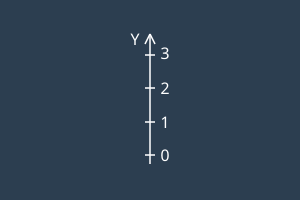

Speed and steer calibration helps ensure accurate vehicle control and movement precision.
Step-by-step guided process
Visual instructions with diagrams
Configurable parameters
Validation and testing
}
@case (1) {
Step 1: Calibrate Steering
Set the wheels straight and click next.
}
@case (2) {
Step 2: Speed Limits
Configure the minimum and maximum motor outputs.
}
@case (3) {
Step 3: Verification
Review your settings before deploying to the vehicle.
}
}
TrackCalibrationTest RunVisualizationSave New Calibration

Lay out a straight line with a minimum length
of 3 meters. Ensure there is at least 3 meters of
unobstructed space on the side where the vehicle
will be calibrated.